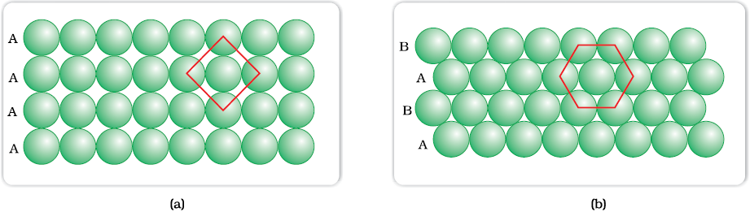
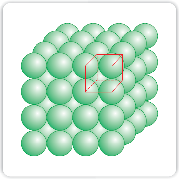
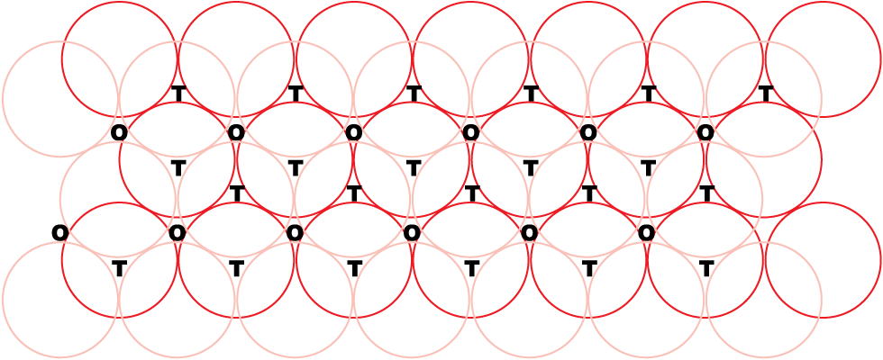
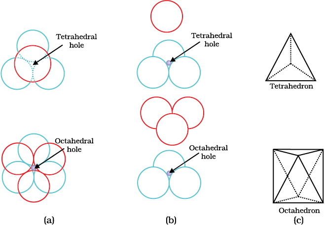
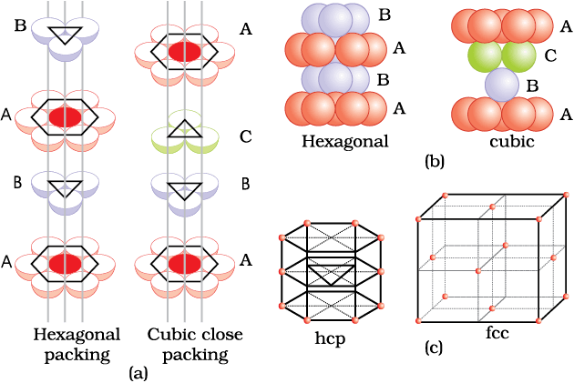
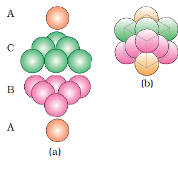
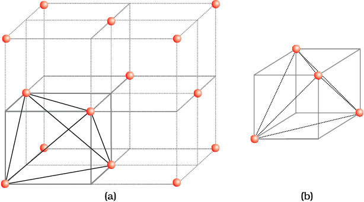
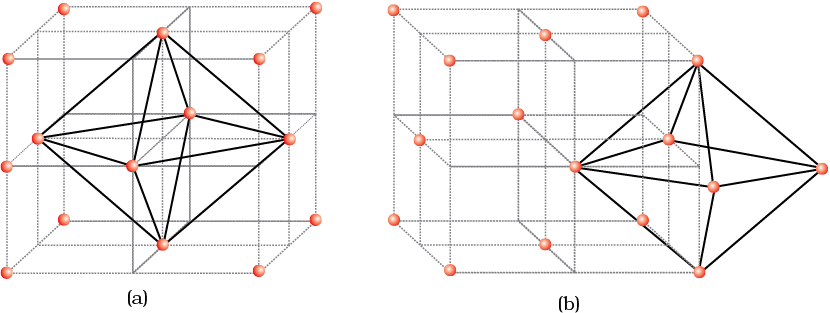
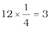

In solids, the constituent particles are close-packed, leaving the minimum vacant space. Let us consider the constituent particles as identical hard spheres and build up the three dimensional structure in three steps.
There is only one way of arranging spheres in a one dimensional close packed structure, that is to arrange them in a row and touching each other.
Close packing of spheres in one dimension
In this arrangement, each sphere is in contact with two of its neighbours. The number of nearest neighbours of a particle is called its coordination number. Thus, in one dimensional close packed arrangement, the coordination number is 2.
Two dimensional close packed structure can be generated by stacking (placing) the rows of close packed spheres. This can be done in two different ways.
(i) The second row may be placed in contact with the first one such that the spheres of the second row are exactly above those of the first row. The spheres of the two rows are aligned horizontally as well as vertically. If we call the first row as ‘A’ type row, the second row being exactly the same as the first one, is also of ‘A’ type. Similarly, we may place more rows to obtain AAA type of arrangement as shown in figure (a).

(a) Square close packing (b) hexagonal close packing of spheres in two dimensions
In this arrangement, each sphere is in contact with four of its neighbours. Thus, the two dimensional coordination number is 4. Also, if the centres of these 4 immediate neighbouring spheres are joined, a square is formed. Hence this packing is called square close packing in two dimensions.
(ii) The second row may be placed above the first one in a staggered manner such that its spheres fit in the depressions of the first row. If the arrangement of spheres in the first row is called ‘A’ type, the one in the second row is different and may be called ‘B’ type. When the third row is placed adjacent to the second in staggered manner, its spheres are aligned with those of the first layer. Hence this layer is also of ‘A’ type. The spheres of similarly placed fourth row will be aligned with those of the second row (‘B’ type). Hence this arrangement is of ABAB type. In this arrangement there is less free space and this packing is more efficient than the square close packing. Each sphere is in contact with six of its neighbours and the two dimensional coordination number is 6. The centres of these six spheres are at the corners of a regular hexagon hence this packing is called two dimensional hexagonal close-packing. It can be seen in figure (b) that in this layer there are some voids (empty spaces). These are triangular in shape. The triangular voids are of two different types. In one row, the apex of the triangles are pointing upwards and in the next layer downwards.
All real structures are three dimensional structures. They can be obtained by stacking two dimensional layers one above the other. In the last Section, we discussed close packing in two dimensions which can be of two types; square close-packed and hexagonal close-packed. Let us see what types of three dimensional close packing can be obtained from these.
While placing the second square close-packed layer above the first we follow the same rule that was followed when one row was placed adjacent to the other. The second layer is placed over the first layer such that the spheres of the upper layer are exactly above those of the first layer. In this arrangement spheres of both the layers are perfectly aligned horizontally as well as vertically as shown.
Similarly, we may place more layers one above the other. If the arrangement of spheres in the first layer is called ‘A’ type, all the layers have the same arrangement. Thus this lattice has AAA type pattern. The lattice thus generated is the simple cubic lattice, and its unit cell is the primitive cubic unit cell.

Simple cubic lattice formed by AAA arrangement
Three dimensional close packed structure can be generated by placing layers one over the other.
Let us take a two dimensional hexagonal close packed layer ‘A’ and place a similar layer above it such that the spheres of the second layer are placed in the depressions of the first layer. Since the spheres of the two layers are aligned differently, let us call the second layer as B. It can be observed from the figure that not all the triangular voids of the first layer are covered by the spheres of the second layer. This gives rise to different arrangements. Wherever a sphere of the second layer is above the void of the first layer (or vice versa) a tetrahedral void is formed. These voids are called tetrahedral voids because a tetrahedron is formed when the centres of these four spheres are joined. They have been marked as ‘T’. One such void has been shown separately.

A stack of two layers of close packed spheres and voids generated in them. T = Tetrahedral void; O = Octahedral void

Tetrahedral and octahedral voids (a) top view (b) exploded side view and (c) geometrical shape of the void.
At other places, the triangular voids in the second layer are above the triangular voids in the first layer, and the triangular shapes of these do not overlap. One of them has the apex of the triangle pointing upwards and the other downwards. These voids have been marked as ‘O’ in the figure. Such voids are surrounded by six spheres and are called octahedral voids. One such void has been shown separately. The number of these two types of voids depend upon the number of close packed spheres.
Let the number of close packed spheres be N, then:
The number of octahedral voids generated = N
The number of tetrahedral voids generated = 2N
When third layer is placed over the second, there are two possibilities.
(i) Covering Tetrahedral Voids: Tetrahedral voids of the second layer may be covered by the spheres of the third layer. In this case, the spheres of the third layer are exactly aligned with those of the first layer. Thus, the pattern of spheres is repeated in alternate layers. This pattern is often written as ABAB ....... pattern. This structure is called hexagonal close packed (hcp) structure. This sort of arrangement of atoms is found in many metals like magnesium and zinc.

(a) Hexagonal cubic close-packing exploded view showing stacking of layers of spheres (b) four layers stacked in each case and (c) geometry of packing.

(a) ABCABC arrangement of layers when octahedral void is covered (b) fragment of structure formed by this arrangement resulting in cubic closed packed (ccp) or face centred cubic (fcc) structure.
(ii) Covering Octahedral Voids: The third layer may be placed above the second layer in a manner such that its spheres cover the octahedral voids. When placed in this manner, the spheres of the third layer are not aligned with those of either the first or the second layer. This arrangement is called ‘C’ type. Only when fourth layer is placed, its spheres are aligned with those of the first layer as shown in the figures. This pattern of layers is often written as ABCABC. This structure is called cubic close packed (ccp) or face-centred cubic (fcc) structure. Metals such as copper and silver crystallise in this structure.
Both these types of close packing are highly efficient and 74% space in the crystal is filled. In either of them, each sphere is in contact with twelve spheres. Thus, the coordination number is 12 in either of these two structures.
Earlier in the section, we have learnt that when particles are close-packed resulting in either ccp or hcp structure, two types of voids are generated. While the number of octahedral voids present in a lattice is equal to the number of close packed particles, the number of tetrahedral voids generated is twice this number. In ionic solids, the bigger ions (usually anions) form the close packed structure and the smaller ions (usually cations) occupy the voids. If the latter ion is small enough then tetrahedral voids are occupied, if bigger, then octahedral voids. Not all octahedral or tetrahedral voids are occupied. In a given compound, the fraction of octahedral or tetrahedral voids that are occupied, depends upon the chemical formula of the compound, as can be seen from the following examples.
We know that close packed structures have both tetrahedral and octahedral voids. Let us take ccp (or fcc) structure and locate these voids in it.
Let us consider a unit cell of ccp or fcc lattice figure (a). The unit cell is divided into eight small cubes.
Each small cube has atoms at alternate corners figure 1(a). In all, each small cube has 4 atoms. When joined to each other, they make a regular tetrahedron. Thus, there is one tetrahedral void in each small cube and eight tetrahedral voids in total. Each of the eight small cubes have one void in one unit cell of ccp structure. We know that ccp structure has 4 atoms per unit cell. Thus, the number of tetrahedral voids is twice the number of atoms.

(a) Eight tetrahedral voids per unit cell of ccp structure (b) one tetrahedral void showing the geometry.
Let us again consider a unit cell of ccp or fcc lattice figure (a). The body centre of the cube, C is not occupied but it is surrounded by six atoms on face centres. If these face centres are joined, an octahedron is generated. Thus, this unit cell has one octahedral void at the body centre of the cube.
Besides the body centre, there is one octahedral void at the centre of each of the 12 edges. figure (b). It is surrounded by six atoms, four belonging to the same unit cell (2 on the corners and 2 on face centre) and two belonging to two adjacent unit cells. Since each edge of the cube is shared between four adjacent unit cells, so is the octahedral void located on it. Only th of each void belongs to a particular unit cell.

Location of octahedral voids per unit cell of ccp or fcc lattice (a) at the body centre of the cube and (b) at the centre of each edge (only one such void is shown).
Thus in cubic close packed structure:
Octahedral void at the body-centre of the cube = 1
12 octahedral voids located at each edge and shared between four unit cells
= 
Therefore, total number of octahedral voids = 4
We know that in ccp structure, each unit cell has 4 atoms. Thus, the number of octahedral voids is equal to this number.